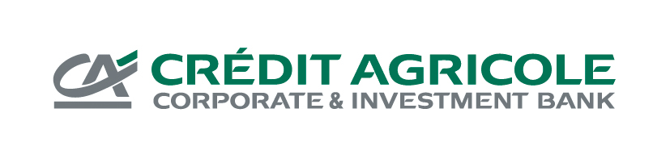
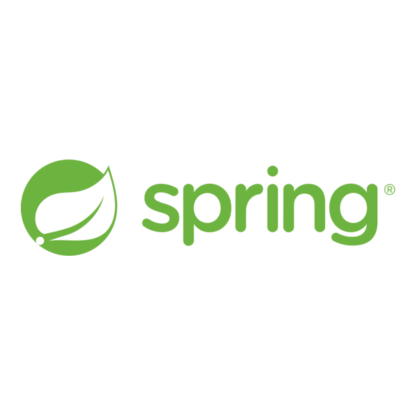
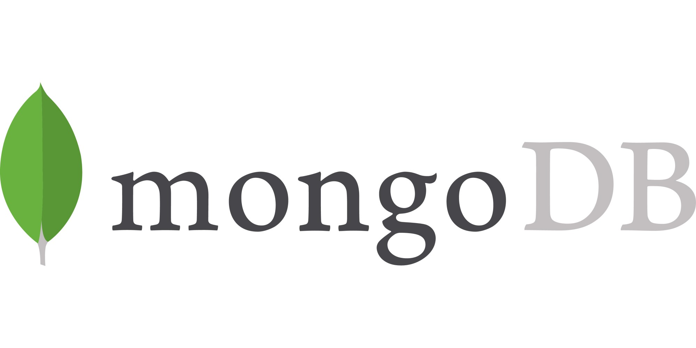
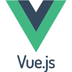

Expérience professionnelle
Stage — Crédit Agricole CIB

Refonte d'une application de suivi de confirmation de trades
Stage réalisé au sein du Crédit Agricole Corporate and Investment Bank (CACIB), au cours de la 2ème année de BUT Informatique, au sein d'une équipe en charge d'applications internes back-office. Le projet portait sur la refonte d'une application de suivi de confirmation de trades, utilisée pour fiabiliser le suivi des confirmations avant règlement.
Je me suis occupée de la partie récupération des confirmations ainsi que de leur enregistrement, avec les données associées, en base de données, dans le respect de l'architecture hexagonale mise en place sur le projet, garantissant une séparation claire entre la logique métier et les aspects techniques (persistance, messagerie).
 Java
Java

Spring Boot
MongoDB RabbitMQAnnée d'alternance réalisée en 3ème année de BUT Informatique
Cette alternance d'un an s'est déroulée au sein de la même entité que mon stage, toujours sur des applications internes back-office. Elle s'est articulée autour de deux grands projets.
Module de traitement de documents
Création, en méthode Agile, d'un module de traitement de documents. Je me suis occupée de la partie gestion des mots de passe : conception du stockage en base de données, développement du back, affichage dans le front sous forme de tableau, et utilisation de ces mots de passe pour déverrouiller des PDF protégés.
Java
 Angular
Spring Boot
Angular
Spring Boot
 PostgreSQL
PostgreSQL
Refonte de l'application de gestion des réclamations et suspens des règlements
Refonte du front de cette application, avec le passage de 4 interfaces en Vue.js à une interface unique en Angular, dans un objectif d'harmonisation et de simplification de la maintenance.
Angular

Vue.js